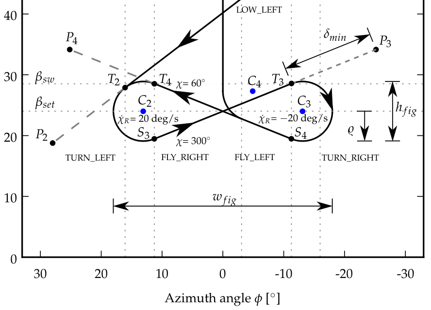
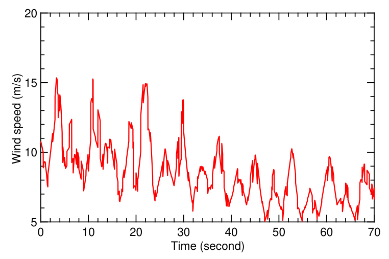
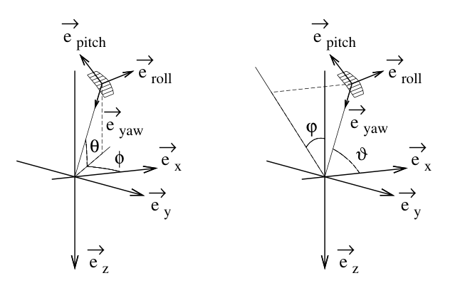
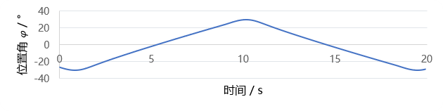
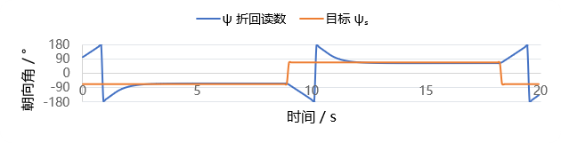
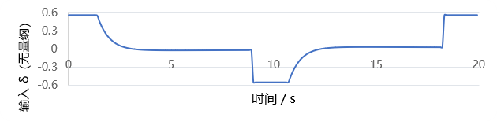

从问题找到依据
前面讲过的内容集中在这里查。第四次汇报重点讲程序怎样控制转弯，以及计算结果说明了什么。
| 想查什么 | 打开内容 | 依据 |
|---|---|---|
| 固定路线、中心吸引、正反矫正，各有什么问题？ | 控制路线、选用原因与原论文证据 | 对应论文与本次解释 |
| 原论文里的 13° 偏差是什么？ | 控制路线、选用原因与原论文证据 | 对应论文与本次解释 |
| x 和 e_roll 是什么？为什么垂直？ | 符号、约束和 2 + 1 个自由度 | 论文图1与坐标定义 ↗ |
| 两套位置角各指什么？ | 地面参考、风向参考及同一个位置 | 论文式(1) ↗ |
| ψg 和 ψ 为什么不同？ | 圆盘内的同一指针，两套零刻度 | 论文式(6) ↗ |
| ±24° 和 ±66° 分别是什么？ | 何时更换目标、换成哪个目标 | 论文第三节 ↗ |
| δ 是舵机角度还是刹车绳位移？ | 论文定义与本程序归一化方法 | 论文式(7) ↗ |
| 控制程序放在哪里？ | 文件路径、函数名和原始代码行 | 本机程序摘录 |
| 图里的曲线是怎么得到的？ | 固定参数、初始状态和适用范围 | 本次模型计算 |
| 怎样判断真的在上升？ | 由位置求高度，再求高度变化率 | 从论文式(1)出发 ↗ |
论文采用 Erhard & Strauch（2013）的 Sensors and Navigation Algorithms for Flight Control of Tethered Kites。本页中文解释、约束计数和程序对照为汇报整理。论文已有方法、程序设置和本次推导分别标明。
控制方法沿革：固定路线、中心吸引、正反矫正
沿用此前汇报的三种说法，先分清它们给定的是位置、目标点，还是机头朝向，再讨论各自问题。对应第四次汇报第5–10页。
| 方法 | 先给什么 | 怎样形成轨迹 | 需要解决的问题 |
|---|---|---|---|
| 固定路线 本项目旧程序 | 按时间规定的八字位置 | 先确定位置，再计算速度和受力 | 转向输入没有参与这条位置曲线的更新，不能凭画出的八字证明纠偏有效 |
| 中心吸引 论文中的双吸引点 | 左右两个目标点 P3、P4 | 轮流朝目标点飞，直飞与转弯分别控制 | 目标点、转弯结束条件和控制参数需要配合；原文给出快速变风下的偏差对比 |
| 正反矫正 当前重点 | 正负交替的目标朝向 ψs | 根据机头误差计算 δ，再由运动方程更新位置 | 换目标后转弯需要时间，还要检查转弯方向、执行器限制和变风下的表现 |
这段“沿革”在汇报里承担什么作用
它说明此前讨论过哪些思路，以及当前为什么先把朝向控制与运动方程接起来。它按汇报的讨论顺序排列，不把三种思路说成相互替代的三代技术。2013年论文已有目标朝向交替，2020年论文给出双吸引点飞行规划和控制器比较，2021年综述总结包括模型预测控制在内的多条研究路线。
本次选择与已有方法怎样分开
航向反馈的基本思想来自论文。本次展开当前代码的目标切换、误差处理和执行器设置，并核对固定参数轨迹。项目尚未让三种控制器在相同风况、模型和执行器限制下完整比较，所以这里没有把它们按拉力或发电量排名。
方法一：固定路线（本项目旧程序）
旧程序先给出各时刻的位置，再计算速度与载荷。画出八字本身不能证明转向控制能让风筝跟住路线。
位置怎样给定
_path() 对地面方位角 φ 和仰角 θ 使用下式：
φ(t) = Aφ a(t) sin(2πt / T)
θ(t) = θ0 + Aθ a(t) sin(4πt / T)
| 符号 | 这里的意思 |
|---|---|
| Aφ、Aθ | 左右与上下摆动幅度，对应 phi_amp_deg、theta_amp_deg 换成弧度 |
| T | 走完一次八字的时间，对应 path_period_s |
| a(t) | 收放绳阶段的幅度修正，对应 amp |
| θ0 | 中心仰角，对应 theta0_deg 换成弧度 |
代码证据
soft_kite_groundgen.py 的 _path()（第60–100行）计算位置。摘录：
path_phase = 2.0 * np.pi * time_s / cfg.path_period_s
phi = np.deg2rad(cfg.phi_amp_deg) * amp * np.sin(path_phase)
theta = np.deg2rad(cfg.theta0_deg) + np.deg2rad(cfg.theta_amp_deg) * amp * np.sin(2.0 * path_phase)
x = tether_length * np.cos(theta) * np.cos(phi)
y = tether_length * np.cos(theta) * np.sin(phi)
z = tether_length * np.sin(theta)_prescribed_closed()（第598行起）先调用 _path()，对位置求导得到速度与加速度，然后反算受力并估算转向需要。这一分支没有把估算出的 δ 再送回位置方程积分。风可以改变载荷计算，但不会通过转向响应改变这条规定好的路线。
能做什么，还有什么不能证明
这条路线可以用于先检查速度、受力和载荷计算。要回答“风吹偏后能否纠正”“舵机能否跟上”，还要让操纵输入改变朝向和后续位置。后文的固定参数复算使用运动方程更新位置，和这里的固定路线不同。
为什么不能直接叫它 NMPC
非线性模型预测控制（NMPC）先用模型预测未来运动，再优化操纵量。它可以跟踪参考轨迹，也可以处理其他目标与约束。上面的代码只是规定位置，并没有在线优化操纵量，因此不能用该代码的结果代表 NMPC。Vermillion 等（2021）综述 §5.2 ↗
方法二：中心吸引（论文中的双吸引点）
程序让风筝朝当前目标点飞，到转弯位置后掉头，再朝另一个目标点飞。图中的吸引点是 P3、P4，转弯圆心是 C2、C3，两者不同。

| 步骤 | 控制动作 | 怎样进入下一步 |
|---|---|---|
| ① 左转 TURN_LEFT | 给定转弯速度 | 飞行方向角达到规定条件后，开始飞向 P3 |
| ② 向右飞 FLY_RIGHT | 朝 P3 飞，直飞段用 PID | 方位角小于负位置界限，进入右转 |
| ③ 右转 TURN_RIGHT | 给定转弯速度 | 飞行方向角达到规定条件后，开始飞向 P4 |
| ④ 向左飞 FLY_LEFT | 朝 P4 飞，直飞段用 PID | 方位角大于正位置界限，进入左转 |
直飞结束看位置，转弯结束看方向，不能把四步都解释成“到吸引点附近就切换”。该文为简化控制，假设机头朝向与飞行方向近似相同，见第5页。查看表1的完整切换条件 ↗ · 查看图6的四个状态 ↗
问题在哪里
目标点的位置、停止转弯的条件和控制参数需要配合。原文第7页还考虑了停止转弯指令到实际响应之间约2秒的延迟，因此设置方向角补偿。图4为了展示几何关系，将这一补偿画成零；不能把示意图直接当作实际控制的全部参数。
在该论文的快速变风工况中，固定增益 PID 的轨迹逐渐向更低仰角偏移。论文用模型辨识和自适应控制改善这一结果。原文没有把本例直接归因于积分饱和，也不是实飞“冲高13°”。
方法三：正反矫正（当前重点）
“正反”指目标朝向 ψs 正负交替。控制器再比较目标和实际机头朝向，计算转向输入 δ。
| 先后关系 | 具体做什么 | 深入查看 |
|---|---|---|
| 先决定朝哪边飞 | 当前位置满足条件时，将目标朝向从 +66° 切到 −66°，或反过来；其他情况保持原目标 | 完整分段式、条件与例子 |
| 再让机头转过去 | 比较 ψs 与 ψ，并按所选转弯方向处理角度误差，计算有幅值限制的 δ | 为什么给误差加减2π · 输入与刹车绳位移 |
| 再更新位置 | δ 先影响朝向变化率，再由运动方程得到后续朝向与位置 | 论文方程与控制过程 |
正目标就一定给正舵吗
不一定。ψs 是希望机头朝哪里，δ 是让机头转过去的操纵量。δ 的正负由目标、当前朝向与转弯方向规则共同决定。也不能把 ±66° 的目标朝向和 ±24° 的位置切换界限混为同一个角。
论文已有和本次工作
Erhard & Strauch（2013）第三节已说明正负目标朝向交替的控制思想。本次把当前程序的目标切换、误差处理及执行器设置展开，并检查给定参数下是否形成八字。±66°、基础±24°和控制增益属于当前程序设置。打开论文第三节 ↗
这套方法还要解决什么问题
原论文对比：工况、坐标与仰角偏差
Dief 等（2020）让两种控制器使用同一模型和工况 II 的风速信号，各仿真 70 s。原文报告的最大仰角偏差 Δβ：固定增益 PID 为 13°，辨识模型并自适应调整参数的方法为 2.5°。
工况 II 到底是什么条件？
“工况”就是这次计算采用的条件。此处 II 是编号，指第5.2节采用的第二组风速信号。作者说明，它的波动频率高于工况 I。这里展示第5节的仿真结果，实飞数据在第6节另行讨论。

| 条件 | 原论文设置与含义 |
|---|---|
| 模型 | 两种控制器均采用第2节的简化风筝模型。 |
| 风速输入 | 两种控制器均采用图10信号。作者说明其起伏比工况 I 更快，相关段落没有给出一个固定频率值。查看第5.2节 ↗ |
| 仿真时间 | 均为 70 s。后面的两张轨迹图把这段时间的飞行位置画在方位角—仰角平面上。 |
| 计划路线 | 八字路线围绕仰角设定值 βset = 24° 展开。set 表示“设定值”。计划路线各点的仰角也在变化，并非全程都等于 24°。查看设定值说明 ↗ |
模型中的 va 是相对来流速度的大小，也就是风筝迎面感到的风速。原文式(5)用“空气速度向量减去风筝速度向量”得到相对来流速度。图10纵轴原标注只写 Wind speed，没有写变量符号，因此这里保留原标注。查看相对来流速度定义 ↗
这篇论文的 βset = 24° 指仰角设定值。本项目的 ±24° 指另一套坐标中的位置角切换界限。它们不是同一个条件。
两张轨迹图的横轴、纵轴和线条分别是什么？
| 原图标注 | 论文符号与单位 | 直白含义 |
|---|---|---|
| 横轴 Azimuth (degree) | 方位角 φ，单位 ° | 把绳投影到水平面，看这个投影相对风向参考轴 xw 转过多少角度。xw 沿风向，φ 描述风筝在左右哪一边。横轴不是时间。 |
| 纵轴 Elevation (degree) | 仰角 β，单位 ° | 绳与水平面的夹角。β 越大，绳抬得越高。只有绳长相同时，才能直接据此比较高度。 |
| 红色实线 Desired path | 计划轨迹 | 希望风筝飞过的位置。 |
| 灰色虚线 Simulated path | 模拟轨迹 | 采用模型和相应控制器，计算得到的位置。 |
| 仰角偏差 Δβ | 两条轨迹的仰角差，单位 ° | 比较模拟路线与计划路线在仰角方向差多少。13°、2.5°是作者报告的最大偏差。 |
此处完全沿用 Dief（2020）的符号：β 是仰角。此前两套机头朝向换算 ψ = ψg + β 中的 β 是零刻度偏移，含义不同。这里绕竖直轴的 φ，也不能直接当成 Erhard（2013）绕顺风轴的位置角 ϕ。回看本项目的两套坐标


Δβ、24° 和图内百分比怎样区分？
β 是风筝位置的仰角，Δβ 是两条轨迹之间的仰角差。作者选择仰角差作为路线偏差的评价量，并在第21页报告最大值。计算偏差时，应比较模拟轨迹与计划轨迹；不能把整条计划轨迹都替换成常数 24°。原文相关段落未给出路径点的配对计算步骤，这里不补造算法。
图内 65% 和 12.5% 沿用原图。相关正文没有明写百分比的归一化基准，因此本页不把猜测的分母当成论文定义，而按原文直接给出的 13° 与 2.5° 比较。查看评价量说明 ↗ 查看最大偏差数值 ↗
图20和第19页文字说明，固定增益 PID 的轨迹逐渐向低仰角移动，所以 13° 是偏差，不能说成“冲高 13°”。作者将两种控制器的差异解释为：固定增益无法适应快速变化的动态响应，而辨识模型并调整控制参数改善了响应。
这组结果比较的是该论文的两种控制器。本项目的航向反馈程序尚未参加这一组同工况测试，因此不能据此判断本项目优于 PID 或 NMPC。
原稿中的 14.7 kN 与 5.6 kN 仍需对应原始工况和数据，保留为待复核记录。
图片来源：Dief et al., Adaptive Flight Path Control of Airborne Wind Energy Systems, Energies 2020, 13(3), 667，图10、图20、图21，仅裁去页边及图外文字。论文 DOI。
回看双吸引点怎样控制 · 下一项：正反矫正 · 返回三种方法
位置向量、机头方向与自由度
是的，x · e_roll = 0 表示这两个非零向量互相垂直。这里 x 沿绳指向风筝，e_roll 沿机头方向。
| 符号 | 准确含义 | 直观理解 |
|---|---|---|
| x | 从系绳点指向风筝的位置向量，长度为 L | 从地面起点指向风筝的箭头 |
| eroll | 机体纵轴的单位向量，沿机头方向 | 圆盘里的机头指针，长度只取 1 |
| ex | 固定坐标系中沿顺风方向的单位向量 | 地面坐标的一根固定轴，与位置向量 x 区分 |
| eyaw | 机体偏航轴方向；本模型约束它沿绳 | 圆盘绕着的轴 |

roll 是机体轴的名称。e_roll 本身是向量，不是滚转角。点乘为零没有说两个向量相等，也没有说它们都为零。

为什么是 2 + 1
| 约束 | 剩下能独立变化的量 |
|---|---|
| 固定绳长、绳绷紧：‖x‖ = L | 位置在球面上，只需两个位置角 |
| 再限定偏航轴沿绳 | 机头在与绳垂直的平面内转动，只需一个朝向角 |
结论仅适用于固定绳长、绳绷紧、偏航轴沿绳的受约束模型。固定绳长这一条本身不会把姿态也减成一个自由度。
两套位置角描述同一个位置，ψg 和 ψ 描述同一个机头方向。因此换一套坐标不会增加自由度。真实软伞形变、绳松弛或自由飞行的模型需要另行讨论。
两套位置角
控制和运动方程主要用后者（ϕ、ϑ、ψ）；导航与姿态估计仍用前者（φ、θ、ψg）。两套坐标描述同一个位置和朝向。
论文为什么保留两套坐标
第二节说明了分工：控制设计以风向为对称轴，姿态估计以重力向下的方向作参考。第三节式(7)–(9)采用 ϕ、ϑ、ψ；第五节的估计器求 ψg。所以，对本次控制公式而言，主要用后者；对整篇传感器导航论文，不能把前者省掉。
| 符号 | 定义 |
|---|---|
| 𝜙、θ | 地面方位角、相对水平面的仰角 |
| 𝜑、ϑ | 绕顺风轴的方位角、绳与顺风轴的夹角 |
| x、y、z 轴 | x 轴顺风，z 轴向下，构成右手坐标系 |

程序变量 varphi 对应 𝜑，vartheta 对应 ϑ。判断 ±24° 条件使用的是 风向参考的 𝜑，不能拿地面方位角 𝜙 的极值来比较。
同一机头方向的两套读数
圆盘和机头都不动，只更换从哪里开始量角度，读数就会改变。

| 读数 | 零刻度 |
|---|---|
| ψg | 向上方向在切平面内的投影 |
| ψ | 逆风方向在切平面内的投影 |

切平面就是风筝所在处、与绳垂直的平面。β 随位置变化，不是新增的机头转动或姿态自由度。投影为零的特殊位置不能用这条投影定义零方向。
±24° 与 ±66° 分别是什么
±24° 用来判断什么时候更换目标。±66° 表示更换后希望机头朝哪个方向。
| 数值 | 比较或设置的对象 | 本次固定参数规则 |
|---|---|---|
| ±24° | 风筝位置角 𝜑 | 位置超出对应界限时，更换目标 |
| ±66° | 目标机头朝向 ψs | 在 +66° 与 −66° 两个目标之间切换 |
论文已有的方法
论文第三节说明：先给正的目标朝向，过一段时间改成负的目标朝向，使风筝转弯并朝另一侧运动。论文在这里没有规定本程序使用的 ±24° 与 ±66° 数值。
打开原文第三节的说明 ↗
本次固定参数计算的具体规则

| 检查前目标 | 当前位置 | 检查后目标 |
|---|---|---|
| +66° | 𝜑 < −24° | −66° |
| −66° | 𝜑 > +24° | +66° |
| 任意 | 其他情况，包括刚好等于界限 | 保持原目标 |
例如当前目标是 +66°，测得位置角 𝜑 = −25°，程序把目标改成 −66°。改的是目标，实际机头和位置仍连续变化。
完整程序的 phi_sw = phi_sw_base * amp_cur 会随工况缩放界限。这里的 ±24° 是当前固定参数复算的设置。
转弯方向与加减 2π
先算目标与实际朝向的角度差，再按程序规则选择转弯方向。加减 2π 改变用于控制的读数。

+228° 表示这一步选择正向转弯。它不表示机头突然跳转，也不保证之后刚好转过 228°。每一步都会重新计算，实际转动还受输入限制和位置变化影响。
这是本程序的控制规则，不能说是论文式(7)–(9)自动给出的控制律。
查看第899–906行和第957–966行转向指令、位移目标与实际位移
先按机头误差算转向指令，再换成刹车绳的位移目标。实际位移需要时间才能跟上。对应第四次汇报第15–16页。
先把几个量分开
| 符号 | 大白话 | 单位 |
|---|---|---|
| eψ | 按转弯方向规则处理后的朝向误差，见误差加减2π | 计算时用弧度 rad |
| δcmd | 控制器希望给多大转向输入；cmd 表示指令 | 没有单位 |
| bcmd | 刹车绳希望达到的位移 | 米 m |
| b | 刹车绳实际已经移动到的位置 | 米 m |
| δ = b / 0.20 | 把实际位移按20cm的标准换回转向输入，送入运动方程 | 没有单位 |
第一步：误差乘以比例系数，再限制指令大小

取已经按转弯方向处理过的误差 eψ = +20° ≈ +0.349 rad，则 δcmd = 0.55 × 0.349 ≈ 0.192。它没有超过上限0.55，因此不用截断。
第二步：指令换成刹车绳位移目标
bcmd = smax δcmd，smax = 0.20 m
程序规定 δ = 1 对应20cm位移。因此本例 bcmd = 0.20 × 0.192 ≈ 0.0384 m，也就是3.84cm。当前指令上限0.55对应的目标位移上限是11cm。
3.84cm是目标位移。它不表示刹车绳已经瞬间移动了3.84cm。
第三步：实际刹车绳逐步跟上目标

| 本例条件：目标3.84cm，初始 b = 0 | 计算 | 动作含义 |
|---|---|---|
| 还差多远 | bcmd − b ≈ 0.0384m | 还差3.84cm |
| 希望多快移动 | 0.0384 / 0.10 = 0.384m/s | 希望每秒移动38.4cm，但超过速度上限 |
| 限制速度 | 实际取0.25m/s | 每秒最多移动25cm |
| 经过一个0.02s子步 | Δb = 0.25 × 0.02 = 0.005m | 这一步只移动了0.5cm，实际 b 变为0.005m |
| 送入运动方程的实际输入 | δ = 0.005 / 0.20 = 0.025 | 尚未达到指令 δcmd ≈ 0.192 |
Δb 表示这个子步内位移的改变量。后续每一步都会重新计算指令和实际位移。完整程序还将 b 限制在 ±0.20m；本例没有碰到这个机械行程限制。
这些公式来自哪里
论文式(7)说明转向输入 δ 如何影响机头转动。上述归一化、0.55的比例系数与限幅、0.20m的位移标准，以及0.10s和0.25m/s的执行器参数，均是本程序的设置。δ 不是机头角，也不能直接当作舵机轴转角；实物哪侧绳子被收紧，还需要机构与正方向约定。
这里演算了完整程序中的执行器一步。后面的固定参数曲线直接令 δ = δcmd，没有加入执行器延迟，所以不要用本例的0.5cm去解释那组曲线的每个采样点。
攻角 α
攻角看的是翼弦与局部相对来流的夹角。机头朝向看的是机头在切平面内朝哪个方向。
| 量 | 量哪两个方向之间的角 | 例子 |
|---|---|---|
| 机头朝向 ψ | 机头方向与逆风方向在切平面内的投影 | 从圆盘零刻度量到指针 |
| 攻角 α | 翼弦与局部相对来流 | 从翼型侧面看，来流与弦线夹多少角 |
来流与风筝相对运动有关。即使机头朝向读数没有变，来流或翼型姿态发生变化，攻角也可能变化。因此不能用 ψ 或 δ 的数值直接替代 α。
本次固定参数球面模型采用给定升阻比 E，未独立积分攻角。真实气动模型怎样使用攻角，需要按对应翼型和极线定义。
回查 ψ、ψs、δ、b 的对照 · 论文式(7)–(9)与升阻比 E ↗论文的三条运动方程
δ 先影响机头的转向速度；实际朝向 ψ 再影响两个位置角怎样变化。

| 量 | 含义 |
|---|---|
| g | 转向增益，这里不是重力加速度 |
| vₐ | 空速 |
| L | 绳长 |
| E | 升阻比 |
| 角上的点 | 对时间求导，即这个角每秒变化多少 |
每一步把变化率随时间累加，就能得到新的角度。目标朝向怎样切换、误差怎样限幅由控制程序给出。
查看程序第968–974行对三条方程的实现系统部件与分工
转向吊舱操纵软伞，卷扬发电机收放主绳。程序模型中已经包含相关计算，实际硬件方案仍需确定。
| 部件 | 具体做什么 |
|---|---|
| 软伞 | 产生气动力 |
| 主牵引绳 | 把拉力传到地面 |
| 转向吊舱和舵机 | 改变左右刹车绳，操纵软伞转向 |
| 传感器 | 测量或估计角度、角速度、空速和绳长等 |
| 主控制器 | 根据状态计算目标与操纵输入 |
| 卷扬发电机 | 收放绳并交换能量 |
2013 年论文研究的是牵引风筝系统，其第四节给出传感器配置。地面收放绳发电系统在本汇报中是方案示意，不能据此声称本项目已经完成硬件搭建。
打开论文第四节与传感器表 ↗ · 查看 Python 控制程序实际高度怎样变化
判断上升或下降，要看实际高度 h 的变化率。只看 cos ψ 的正负不够。


前面的高度关系来自论文位置式。最后一步求导并代入，是本次汇报补充展开的推导。
反例：𝜑 = 0°、ϑ = 60°、ψ = 80°、E = 5、vₐ = 24 m/s。虽然 cos ψ > 0，仍有 ḣ ≈ −2.07 m/s，表示正在下降。
上述求导假设 L 固定。如果绳长变化，还要加入绳长变化对高度的贡献。
曲线的条件与结果
这是给定参数下的模型计算，不是实飞数据。目标改变后，机头需要时间转弯，所以位置还会继续变化。
| 项目 | 本次固定参数 |
|---|---|
| 模型 | L = 260 m，vₐ = 24 m/s，E = 5，g = 0.13 m⁻¹ |
| 控制 | ψsw = 66°，𝜑sw = 24°，Kp = 0.55，|δ| ≤ 0.55 |
| 初始状态 | 𝜑 = 0°，ϑ = 43.75°，ψ = 63.11°，初始目标 +66° |
| 时间 | 步长 0.02 s，计算 80 s，图中显示最后 20 s |
| 计算方法 | RK4 积分，每 0.1 s 取样显示 |
| 执行器 | 本组曲线直接采用 δ = δ_cmd，未加入舵机滞后 |
三幅曲线的纵轴分别是什么
| 曲线 | 纵轴的量与单位 | 怎样读 |
|---|---|---|
| 位置 | 绕风轴的位置角 ϕ，单位 ° | ±24°是目标切换的界限，约±30.3°是这一组计算的位置极值 |
| 朝向 | 实际机头朝向 ψ 与目标 ψs，单位 ° | 蓝线是实际朝向，橙线是目标；±180°处的跳变只是读数折回 |
| 输入 | 归一化转向输入 δ，无量纲 | ±0.55是操纵量限制，不是角度；这一组曲线令δ=δcmd |



三幅图来自PPT中的原生图表，数值与原稿一致，只补全了纵轴说明。横轴均为秒，展示最后20s并重新记为0–20s。
±24° 是更换目标的位置条件。这组计算中的风向参考位置角 𝜑 大约到 ±30.3° 才返回。地面方位角 𝜙 的极值约为 ±27.6°，它属于另一套坐标，不能混用。

完整工程程序还考虑变化的绳长、空速、升阻比和执行器状态。这里的固定参数曲线不能直接等同于完整工程程序输出，也不证明任意初始条件都稳定。
回查什么时候更换目标 · 回查如何判断上升或下降程序文件与逐行对照
所说的程序是 soft_kite_groundgen.py，核心函数为 _integrated_closed()，从第782行开始。
本机文件位置
D:/虚拟C盘/导师/黄伟希/AWES复刻/计算程序/awes/architectures/soft_kite_groundgen.py
下面保留与汇报直接相关的代码行及原行号。网页不运行仿真。程序参数和控制规则是当前实现，不能因为代码注释提到论文，就把所有参数都算作论文原值。
| 代码范围 | 对应问题 |
|---|---|
| 第805–815行 | 目标朝向、位置界限和执行器参数 |
| 第891–906行 | 检查位置、换目标、计算误差和输入 |
| 第948–974行 | 更新执行器并计算三条运动方程 |
参数
805 # 控制与模型参数（Erhard & Strauch 2013）806 gk = 0.13807 kp = 0.55808 dmax = 0.55809 psi_cmd_rad = np.deg2rad(66.0)810 phi_sw_base = np.deg2rad(24.0)811 stroke_m = 0.20812 rate_mps = 0.25813 tau_s = 0.10814 eta_servo = 0.70815 aspect = 5.0更换目标和计算转向指令
891 # 外环：过界切换目标朝向 ψ_s892 amp_cur = w_shape * 1.0 + (1.0 - w_shape) * max(float(reset_amp), 0.35)893 phi_sw = phi_sw_base * amp_cur894 if target_sign > 0 and varphi < -phi_sw:895 target_sign = -1.0896 elif target_sign < 0 and varphi > phi_sw:897 target_sign = 1.0898899 psi_s = target_sign * psi_cmd_rad900 e_psi = _wrap_angle(psi_s - psi)901 if target_sign < 0 and psi > 0 and e_psi < 0:902 e_psi += 2.0 * np.pi903 elif target_sign > 0 and psi < 0 and e_psi > 0:904 e_psi -= 2.0 * np.pi905906 d_cmd = float(np.clip(kp * e_psi, -dmax, dmax))907 delta_need[i] = kp * e_psi908 delta[i] = brake_pos / stroke_m if stroke_m > 0 else d_cmd909 brake_m[i] = brake_pos执行器和运动方程
948 if i + 1 < n:949 dt_total = float(time_s[i + 1] - time_s[i])950 n_sub = max(1, int(np.ceil(dt_total / 0.02)))951 dt_sub = dt_total / n_sub952 for _ in range(n_sub):953 if target_sign > 0 and varphi < -phi_sw:954 target_sign = -1.0955 elif target_sign < 0 and varphi > phi_sw:956 target_sign = 1.0957 psi_s_sub = target_sign * psi_cmd_rad958 e_sub = _wrap_angle(psi_s_sub - psi)959 if target_sign < 0 and psi > 0 and e_sub < 0:960 e_sub += 2.0 * np.pi961 elif target_sign > 0 and psi < 0 and e_sub > 0:962 e_sub -= 2.0 * np.pi963 d_sub = float(np.clip(kp * e_sub, -dmax, dmax))964 v_srv = float(np.clip((d_sub * stroke_m - brake_pos) / tau_s, -rate_mps, rate_mps))965 brake_pos = float(np.clip(brake_pos + v_srv * dt_sub, -stroke_m, stroke_m))966 delta_eff = brake_pos / stroke_m if stroke_m > 0 else d_sub967968 def _rhs(st):969 vp_s, vt_s, ps_s = st970 vt_c = float(np.clip(vt_s, np.deg2rad(8.0), np.deg2rad(82.0)))971 dvt = (va_eff / max(ell, 1.0)) * (np.cos(ps_s) - np.tan(vt_c) / glide_e)972 dvp = -(va_eff / (max(ell, 1.0) * np.sin(vt_c))) * np.sin(ps_s)973 dps = gk * va_eff * delta_eff + dvp * np.cos(vt_c)974 return np.array([dvp, dvt, dps], dtype=float)程序摘录日期：2026-11-16。后续如果程序改变，请同步更新本页行号和参数。